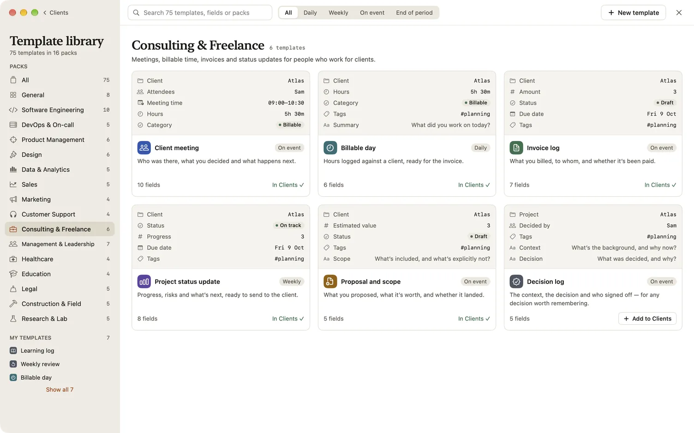
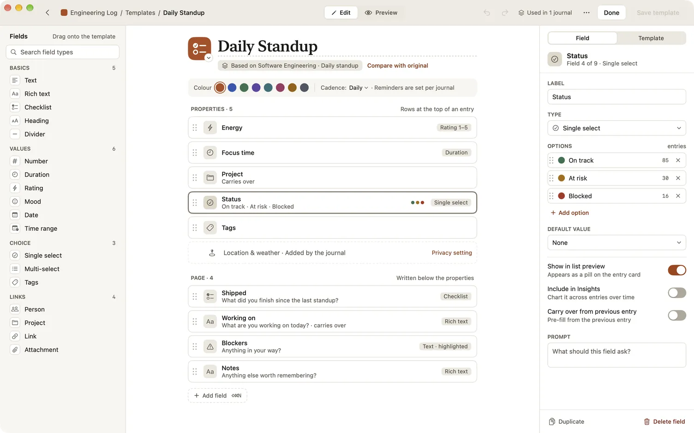
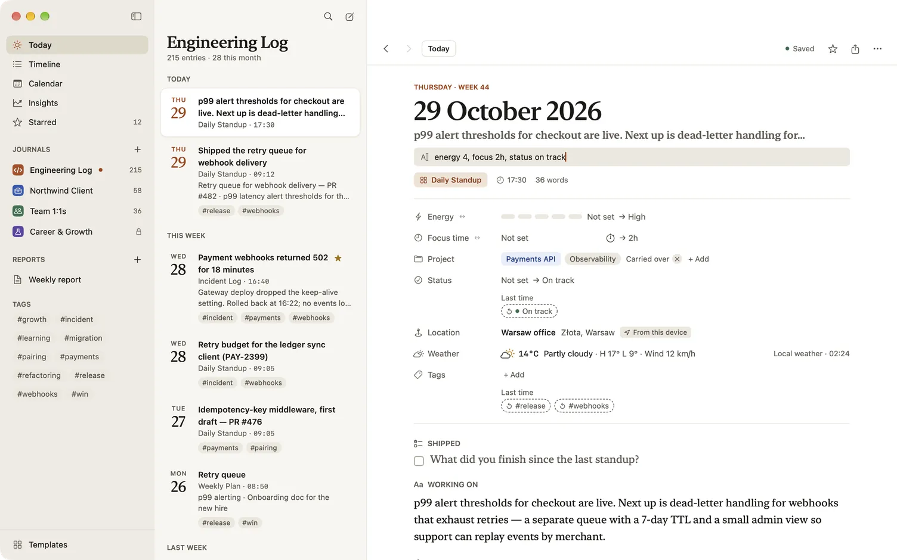
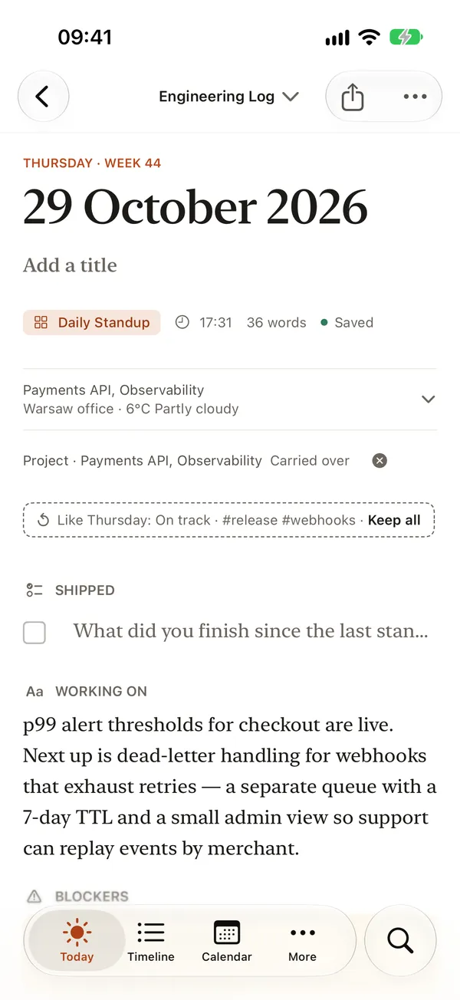

Templates and fields
Every Dayfolio entry starts from a template, so you write in the shape of your work instead of facing a blank page. A template is an ordered set of fields: a rating for energy, a duration for focus time, a status with coloured options, a checklist of what shipped, a notes field. Because the values are structured, Dayfolio can chart them in Insights, add them up in reports and carry them from one entry to the next.
The template library
The library holds 75 ready-made templates in 16 packs, one for each kind of work: Software Engineering, Consulting & Freelance, Management & Leadership, Healthcare, Education and more. Templates that fit any job, such as Weekly review, 1:1 notes and Decision log, live in the General pack. You can browse them all in the template gallery.
To open the library:
- On a Mac: choose Templates at the foot of the sidebar, or View › Template Library (⇧⌘L).
- On iPhone and iPad: choose More › Templates.
- From a journal: in the New entry sheet, choose Browse template library…; in the journal’s settings, go to Templates and add one from the library.
Search finds templates by name, description, field or pack. The filter narrows them by cadence: Daily, Weekly, On event or End of period. Cadence only describes a template; it never schedules anything.

Add a template to a journal
- Open a template in the library.
- Choose Add to and the journal (for example Add to Engineering Log). If you already use a copy of that template, Dayfolio reuses it; Add a fresh copy makes a separate one.
- Or choose Customize… to change it first. Dayfolio opens a copy in the template editor, and nothing is saved until you choose Save template.
The template you add goes to the end of the journal’s list.
Change a template
Open the template editor with Customize… in the library, Edit in the journal’s settings, or ⋯ › Edit template on an entry made from it.
The editor has two sections, as an entry does: Properties, the values at the top of the page, and Page, the longer fields underneath.
- Add a field: choose Add field (⇧⌘N on a Mac) and pick a type.
- Reorder: drag a field within its section.
- Set it up: select a field to change its label, its prompt (the faint text shown while it’s empty), its options and their colours, or a default value. Switches decide whether it shows in list previews, counts in Insights and charts, carries over from the previous entry, and, for a text field, is drawn as a warning, the way Blockers is.
- Compare with original shows what you’ve changed from the library’s version, and can add a removed field back.
- Preview shows the entry as it will look.
Choose Save template when you’re done. If you leave with changes, Dayfolio asks whether to save them.

Field types
| Group | Types |
|---|---|
| Basics | Text, Rich text, Checklist, Heading, Divider |
| Values | Number, Duration, Rating, Mood, Date, Time range |
| Choice | Single select, Multi-select, Tags |
| Links | Person, Project, Link, Attachment |
Rich text keeps bold, italics, headings, lists, checklists, quotes, code blocks and links. With Markdown shortcuts on, typing **, #, - [ ], > or three backticks formats as you write. On iPhone and iPad, the Aa menu above the keyboard has Quote, Code block, Indent and Outdent.
What changes when you edit
A template change applies to entries you make from then on, in every journal that uses the template. Each entry keeps the fields it was made with, so old entries never change under you. Renaming a field or an option keeps it the same field, so charts and reports stay continuous. Changing a field’s type starts a new field; past entries keep the old one.
Each journal’s templates
In a journal’s settings, Templates lists the templates that journal uses. Drag to reorder them, use the star to choose the default, the one Today offers and New entry selects first, and switch one off to hide it from New entry. Remove from journal takes it out of that journal only; the template and its entries stay.
Fill an entry quickly
The Fill line
The Fill line fills several fields from one typed line, such as energy 4, focus 2h, status on track, #release.
- On a Mac or an iPad with a keyboard, press Tab in the entry’s title.
- On any device, choose ⋯ › Fill fields.
Write each value after the first letters of its field’s name. Durations read as “2h”, “90m”, “1.5h” or “2h30”; ratings as a number from 0 to 5; options by their first letters; people and projects by name; tags anywhere with #. Each value previews on its row as you type, and anything Dayfolio can’t read is underlined with the reason. Press Return to write them all at once, as one step you can undo, or Esc to close the line without writing anything. A label the entry doesn’t have, with a clear value, offers to add that field to this entry only.

Last time’s values
In an entry made today, an empty select, person, project, tags or link field shows the value it had last time, faintly, under “Last time”. Nothing is filled in until you tap it.
- Tap one value to keep it, or keep them all: on iPhone and iPad, the line under the entry’s summary reads “Like Thursday: On track · #payments · Keep all”; on any device, ⋯ › Keep values from last time does the same.
- Using the field’s own control replaces its suggestion. Esc hides them all for that entry.
- When you’ve kept the same field’s value three entries in a row, Dayfolio offers to fill it from last time automatically. Turn on… opens the template with carry-over switched on for that field, ready to save; Not now stops asking about it. See Carry-over between entries.

Durations and the timer
- On iPhone and iPad, touch and hold a duration, number, rating or mood, then slide to set it. While you type a duration, “−15m” and “+15m” sit beside it.
- On a Mac, ↑ and ↓ step a focused duration by 15 minutes, or a number by 1; add ⇧ for an hour or 10.
- On an entry dated today, every Duration and Time range field has a stopwatch. Start it, work, and Stop adds the minutes to the field (a Time range gets its end time). Touch and hold the stopwatch, or Control-click it on a Mac, to start from 5, 15 or 30 minutes ago. A running timer shows on iPhone’s Lock Screen and in its Dynamic Island, at the bottom of the app on iPhone and iPad, and in the menu bar on a Mac.
One-off fields
On a Mac, Add field on an entry adds a field to that entry alone, without changing the template. On any device, the Fill line offers the same for a label the entry doesn’t have. A one-off field is searchable like any other.
What’s free
Templates from the library are free to add, customize and edit. Making a template from scratch with New template, copying one with Duplicate template, and editing a template of your own come with the full version.